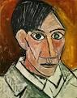
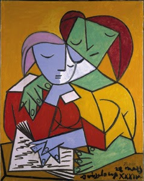
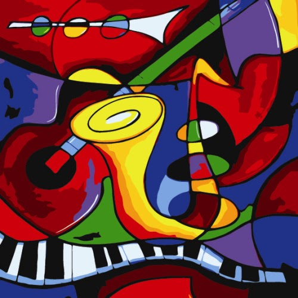

|  |  |  |
Pablo Picasso nacque a Málaga, il 25 ottobre del 1881, figlio primogenito di José Ruiz y Blasco (1838-1913)[3], pittore specializzato nella rappresentazione naturalistica (soprattutto degli uccelli) e di María Picasso y López (1855-1939)[4]. Aveva due sorelle minori: Dolores (1884-1958) e Concepción (1887-1895), morta prematuramente. Il bisnonno materno del celebre artista si chiamava Tommaso Picasso (nato nel 1787), e proveniva da Sori, in provincia di Genova[5]; figlio di Giovanni Battista Picasso e di Isabella Musante, si trasferì in Spagna verso l'età di vent'anni[5]. Il giovane Picasso manifestò sin da piccolo passione e talento per il disegno.
Dopo aver trascorso a Málaga i primi dieci anni della sua vita, nel periodo tra i dieci e i quattordici anni, Picasso arriva dunque a Barcellona e vi resta fino all'età di diciannove anni. Si trasferisce in Francia dove resterà fino alla sua morte, avvenuta l'8 aprile del 1973. I suoi ricordi di Málaga sono ricordi d'infanzia in una città molto provinciale e in seno ad una famiglia della piccola borghesia, di condizioni modeste, molto chiusa nel proprio ambiente, formalista ed abitudinaria. Tuttavia, il fatto che il padre di Picasso fosse professore di disegno alla scuola di belle arti ebbe un influsso decisivo sulla formazione culturale dell'artista. Picasso, come ha ricordato in seguito, non avrebbe potuto partecipare ad un concorso di disegni per bambini in quanto, già nella sua infanzia, aveva nozioni tecniche di un adulto, imparate sì dal padre ma dovute anche all'innato dono prodigioso che egli fu ben presto in grado di sviluppare.
Durante i quattro anni che passò a La Coruña, Picasso sviluppò queste nozioni tecniche ad un punto tale che suo padre, un giorno, notando la qualità eccezionale di un esercizio di disegno che egli stesso aveva proposto, spinto dall'emozione, decise di consegnare definitivamente al figlio la tavolozza e i pennelli, considerandolo fin da allora in grado di farne un uso migliore di quanto lui stesso ne avesse mai fatto. Il passaggio da una città andalusa piena di allegria e di luci ad una tetra città galiziana fu sicuramente, nella formazione della personalità del pittore, un'esperienza importante.
Il periodo blu, 1901-1904, consiste in dipinti cupi realizzati nei toni del blu e del turchese, solo occasionalmente ravvivati da altri colori. Si tratta, come dice il nome stesso, di una pittura monocromatica, giocata sui colori freddi, dove i soggetti umani rappresentati, appartenenti alla categoria degli emarginati, degli sfruttati e dei poveri, sembrano sospesi in un'atmosfera malinconica che simboleggia l'esigenza di interiorizzazione: l'umanità rappresentata è quella deprimente di creature vinte e sole che appaiono oppresse e senza speranza. Tra le opere di questo periodo ricordiamo: Donna con lo scialletto blu (Collezione privata, 1902), Celestina (Collezione privata, 1903), La stiratrice (New York, Guggenheim Museum, 1904). L'inizio del periodo è incerto tra la primavera del 1901 in Spagna o l'autunno dello stesso anno a Parigi.
Nel suo austero uso del colore e dei soggetti (prostitute e mendicanti sono soggetti molto frequenti) Picasso fu influenzato da un viaggio attraverso la Spagna e dal suicidio dell'amico Carlos Casagemas. Dall'inizio del 1901 dipinse diversi ritratti postumi di Casagemas, culminanti nel triste dipinto allegorico La Vita (1903) oggi conservato presso il museo d'arte di Cleveland. Lo stesso umore pervade la nota acquaforte Il pasto frugale (1904) che ritrae un uomo cieco e una donna, entrambi emaciati, seduti ad una tavola praticamente vuota. Anche la cecità è un tema ricorrente nei lavori di Picasso di questo periodo, rappresentata inoltre nella tela Il pasto del cieco (1903, conservato presso il Metropolitan Museum of Art) e nel ritratto Celestina (1903). Altri soggetti frequenti sono gli artisti, gli acrobati e gli arlecchini. Questi ultimi, dipinti nel tipico costume a quadri, diventano un simbolo personale dell'artista.
Picasso rimase profondamente colpito dalla tragedia della guerra civile spagnola e, pur senza mai recarsi in Spagna, espresse la sua propensione per la causa repubblicana con attività pubbliche[7] e la denuncia per la barbarie della guerra con il suo capolavoro, Guernica. Durante la prima e la seconda guerra mondiale, rifiutandosi di prendere posizione per qualsiasi parte, incoraggiò l'idea che ciò fosse dovuto alle sue convinzioni pacifiste.
Rimase inoltre distante dal movimento indipendentista catalano, benché durante gli anni giovanili esprimesse un generale supporto e amicizia a numerosi dei suoi attivisti. Nessun movimento politico sembrava coinvolgerlo in grande misura, ciò nonostante si iscrisse al partito comunista francese. Dopo la seconda guerra mondiale Picasso si reiscrisse al partito comunista francese e partecipò ad una conferenza internazionale per la pace in Polonia. Le critiche del partito rivolte ad un suo ritratto di Stalin ritenuto insufficientemente realistico raffreddarono tuttavia il suo impegno politico, anche se rimase membro del partito fino alla sua morte. Nel 1949, recandosi a Roma per l'assemblea della presidenza mondiale del movimento dei partigiani della pace, in una celebre colazione ritrasse con uno schizzo a matita il volto "splendente" di Rita Pisano, e lo intitolò La jeune fille de Calabre. L'opera è oggi conservata nella collezione privata che apparteneva a Carlo Muscetta. Durante i suoi soggiorni romani frequenta l'Osteria Fratelli Menghi [senza fonte], intorno a cui si ritrovano tutti gli artisti di Roma, pittori, poeti, ma anche attori, registi e sceneggiatori.